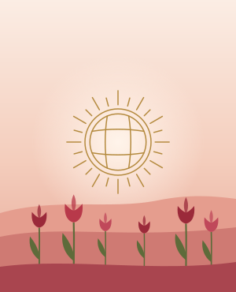

№ 1{BRAND} үлгісі
Құрметті ағайын, дос-жаран! Сіздерді қызымыздың ұзату тойына арналған ақ дастарханымыздың қадірлі қонағы болуға шақырамыз.
Қыз ұзату — қалыңдықтың ата-анасы қызын күйеу жағына аттандыратын той. Сондықтан шақыруды көбіне қыздың әке-шешесі атынан жазады. Бұл бетте қыз ұзату шақыру билеті үшін «Қызғалдақ» үлгісі, 15 дайын мәтін және қонақтарды отырғызу туралы кеңестер бар.
«Қызғалдақ» — жылы, көктемгі үлгі. Түстері — ақшыл қызғылт, анар түсі және алтын. Конверт қызғылт, ішкі қабаты анар түстес, қызғалдақ өрнегі бар. Балауыз мөр де анар түсті. Конверт ашылғанда қызғылт таң мен тербелген дала қызғалдақтары көрінеді. Үлгі жастарға және қыз ұзатуға арналған. Музыка қонақ басқанда ғана қосылады.

Қыз ұзату
Дана
15.05.2027 · сенбі · 18:00
Көктемгі, жастарға.
Музыка қонақ басқанда ғана қосылады.
Демодағы есімдер, күн мен мекенжай ойдан алынған.
Алғашқы екеуі — {BRAND} ішіндегі үлгі мәтіндер, қалғаны — осы бетке арнайы жазылған жаңа мәтіндер. Төртбұрышты жақшадағы сөздердің орнына өз деректеріңізді жазыңыз. Бұлар — үлгі мәтін, дәстүрлі формула емес.
Құрметті ағайын, дос-жаран! Сіздерді қызымыздың ұзату тойына арналған ақ дастарханымыздың қадірлі қонағы болуға шақырамыз.
Қызымыздың ұзату тойына шақырамыз. Қуанышымызға ортақ болыңыздар!
Құрметті ағайын-туыс, құда-жекжат, дос-жаран. Аялап өсірген қызымыз [есімі] жаңа отбасының босағасын аттағалы отыр. Осы қуанышты күні оны ақ батамызбен ұзатамыз. Сіздерді ұзату тойына арналған дастарханымыздың құрметті қонағы болуға шақырамыз.
Қадірлі ағайын, қызымыздың ұзату тойы [күні], [апта күні], сағат [уақыты] басталады. Мекенжайы: [мекенжай]. Ақ тілектеріңізбен қызымызды бірге шығарып салуға шақырамыз.
Құрметті құдалар, ағайын-туыс, дос-жаран. Бір шаңырақтың қызы енді екінші шаңырақтың келіні болмақ. Осы кешті бірге өткізіп, қызымызға ақ батаңызды беруге шақырамыз.
Ардақты ағайын. Қызымыз бен күйеу баламыз жаңа отау құрмақ. Құдаларымыздың алдында қызымызды ұзатып, ақ жол тілейміз. Осы кеште Сіздерді төрімізден көруге ниеттіміз.
Үйіміздің жарығы болған қызымыз енді өз отауының шамын жақпақ. Осы бір қуаныш пен қимастық қатар жүрген кешті жақындарымызбен бірге өткізгіміз келеді. Келіп, қызымызға жылы сөзіңізді айтыңыздар.
Қызымыздың күлкісімен толған үйіміз бір кеш бойы ағайынға толсын деп тілейміз. Ұзату тойымызға келіп, оны ақ тілекпен шығарып салыңыздар.
Біз үшін бұл — әрі қуанышты, әрі қимас күн. Қызымыз туған үйімен қоштасып, жаңа отбасына барады. Жанымызда болып, батаңызды беріңіздер деп шақырамыз.
Сәлеметсіз бе, ағайын. [Күні], сағат [уақыты] — қызымыздың ұзату тойы. Шақыру осы сілтемеде, жауабыңызды күтеміз.
Қызымызды ұзатамыз. Тойдың күні мен мекенжайы сілтемеде. Келсеңіздер, қуанышымыз еселене түседі.
Қадірлі құда-жекжат, қызымыздың ұзату тойына шақырамыз. Сілтемені ашып, келетініңізді белгілеп қойыңызшы.
Құрметті ағайын, дос-жаран, қызымыздың ұзату тойына шақырамыз. Келіп, оның жаңа өміріне ақ жол тілеңіздер.Дорогие родные и друзья, наша дочь выходит замуж, и мы приглашаем вас на её қыз ұзату. Разделите с нами этот вечер — мы будем рады каждому.
Қызымыз [есімі] жаңа шаңырақ құрмақ. Ұзату тойына шақырамыз, осы кеште ортамызда болыңыздар.Наша дочь [имя] создаёт свою семью. Приглашаем на её қыз ұзату — будьте в этот вечер рядом с нами.
Мәтіндердегі мәліметтер ойдан алынған. 15-мәтін — төмендегі «Еске салу» бөлімінде.
Күйеу жақтан әдетте жақын, көбіне жасы үлкен туыстар келеді. Бір деректе айтылуынша, олар — шамамен 10–15 адам, көбіне құдалыққа барғандар, тойдың басынан аяғына дейін отырады. Күйеудің алыс туыстары мен достарын әдетте үйлену тойына шақырады.
Қыз жақтан кімді шақыру — туыстар, нағашылар, көршілер, әріптестер — әр отбасы өзі шешеді. Бұл жайында ортақ ереже жоқ. Тізімді ата-ана мен қыздың өзі бірге толтырса, ешкім ұмыт қалмайды.
Тойдың мәні мен реті туралы толығырақ — Қыз ұзату дәстүрі. Құдалықтан кейінгі қадам туралы — сырға салу.
Бір деректе айтылуынша, құда шақырыста төрге құдалардың үлкені отырады. Бұл — үйдегі қонақ күтудің жолы. Мейрамхана залына арналған бекітілген ереже жоқ, әр отбасы өзі шешеді.
{BRAND}-та қонақтар санаттарға бөлінеді: «Құдалар», «Нағашылар», «Өз туыстар» және басқалар. «Отырғызу реті» бөлімінде қай санат төрге жақын отыратынын өзіңіз белгілейсіз. Келетін қонақтар осы ретпен үстелдерге орналасады, қажет болса, кез келген отбасын басқа үстелге ауыстырасыз. Соңында әр отбасына үстел нөмірі WhatsApp арқылы барады. Толығырақ: отырғызу жоспары.
Шақыру жіберілгеннен кейін біреулер бірден жауап береді, біреулер ұмытып кетеді. «Жауап бермегендер» тізімінен оларды тауып, «Еске салу» арқылы қысқа хабар жіберуге болады. Мысалы:
Құрметті ағайын, қызымыздың ұзату тойы жақындап қалды. Келетініңізді не келе алмайтыныңызды сілтеме арқылы білдірсеңіз, орынды дұрыс дайындаймыз. Рақмет.
Әдетте қыздың ата-анасы атынан жазады, өйткені қыз ұзатуды солар жасайды. Мәтінге отбасы атын немесе әке-шешенің есімін қоюға болады.
Бір деректе айтылуынша, қыз ұзатуды көбіне үйлену тойынан бір апта бұрын өткізеді. Бұл нақты ереже емес: күні мен орнын екі жақ құдалықта келіседі.
Әдетте 10–15 жақын туыс келеді, көбіне құдалыққа барған адамдар. Нақты санды құдалармен алдын ала келіскен дұрыс.
Бұл шешімді әр отбасы өзі қабылдайды. Қыз ұзату шақыру мәтінін (кыз узату шакыру) жазғанда отбасына неше орын сақталғанын көрсетуге болады, сонда қонақ өзі түсінеді.
Той кезінде айтатын сөз керек болса: Қыз ұзатуға тілек, Құдаларға тілек. Басқа шаблондар: Басқа үлгілер.